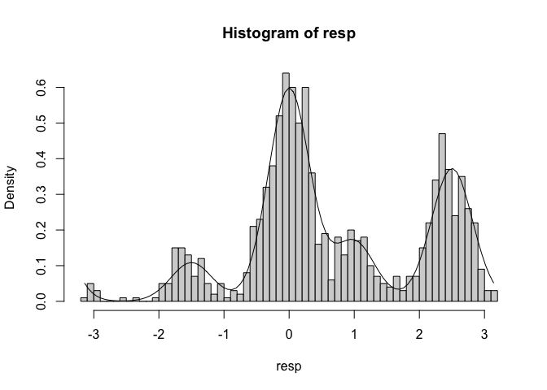
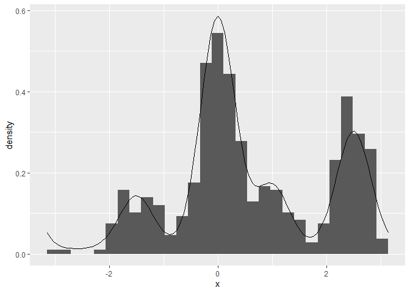

The goal of bmm (Bayesian Measurement Models) is to make it easier to estimate common measurement models for behavioral research using Bayesian hierarhical estimation via the ‘brms’ package’. Currently implemented models are:
Visual working memory
Interference measurement model by Oberauer and Lin (2017).
Two-parameter mixture model by Zhang and Luck (2008).
Three-parameter mixture model by Bays et al (2009).
Signal Discrimination Model (SDM) by Oberauer (2023)
You can always view the latest list of supported models by running:
bmm::supported_models()
#> The following models are supported:
#>
#> - IMMabc(non_targets, setsize)
#> - IMMbsc(non_targets, setsize, spaPos)
#> - IMMfull(non_targets, setsize, spaPos)
#> - mixture2p()
#> - mixture3p(non_targets, setsize)
#> - sdmSimple()
#>
#> Type ?modelname to get information about a specific model, e.g. ?IMMfullInstallation
You can install the development version of bmm from GitHub with:
# install.packages("devtools")
devtools::install_github("venpopov/bmm")The package was significantly updated on Feb 03, 2024. If you are following the old version of the Tutorial preprint, you need to install the 0.0.1 version of the bmm package with:
# install.packages("devtools")
devtools::install_github("venpopov/bmm@v0.0.1")Example 1
The three-parameter mixture model by Bays et al (2009) assumes that responses can come from three different sources - noisy representation of the target, confusion with noisy representation of non-target items, or guessing based on a uniform distribution. To estimate these parameters for a dataset, we can use the fit_model() function. First, let’s generate a dataset with known parameters. We can use the function gen_3p_data()
library(bmm)
library(tidyverse)
dat <- gen_3p_data(N=2000, pmem=0.6, pnt=0.3, kappa=10, setsize=4, relative_resp=T)
head(dat)
#> y nt1_loc nt2_loc nt3_loc
#> 1 -0.3744489 -0.7745662 -1.7851322 2.6250857
#> 2 -0.2276437 -2.9242605 -1.0636064 1.3510206
#> 3 -0.4434759 -3.0442414 3.1308954 2.5139912
#> 4 -0.1851510 2.9494581 -2.5852143 0.7524799
#> 5 -0.2141779 1.3277457 2.9447087 -2.3150407
#> 6 0.5607886 2.5964077 0.8039922 2.9028663We have a dataset of 2000 observations of response error, of which 60% (pmem=0.6) come from the target distribution, 30% (pnt=0.3) are non-target swaps, and 10% are guessing. The precision of the von Mises distribution is 10, the presented setsize is 4 (one target and three lures/non-targets), and the values are coded relative to the target value (i.e., response error for the y variable or displacement relative to the target for the lures).
Just for visualization purposes, here’s a histogram of the error distribution, demonstrating a typical pattern - a normal distribution centered on 0, with long tails:
hist(dat$y, breaks = 60, xlab = "Response error relative to target") Another key property of the data is that some error responses are not random, but that they are due to confusion of the target with one of the lures. We can visualize this by centering the response error relative to each of the possible non-target locations. We do this with the helper function calc_error_relative_to_nontargets():
dat %>%
calc_error_relative_to_nontargets('y', paste0('nt',1:3,'_loc')) %>%
ggplot(aes(y_nt)) +
geom_histogram()
#> `stat_bin()` using `bins = 30`. Pick better value with `binwidth`.
Ok, so now let’s fit the three-parameter model. We only need to do two things: - Specify the model formula - Call fit_model()
In this example the parameters don’t vary over conditions, so we have no predictors. y is the name of the response error variable, whereas kappa, thetat and thetant are the parameters of the model - precision, mixing proportion for correct responses and mixing proportion for non-target swaps.
ff <- brms::bf(y ~ 1,
kappa ~ 1,
thetat ~ 1,
thetant ~ 1)Then specify the model and give it information about the required arguments. In the case of the 3-parameter model, we need to specify the names of the non-target variables and the setsize. We can do this with the mixture3p() function:
You can always get full help and information about the model and its required arguments, as well as examples by running ?mixture3p
Finally we just run the model. The arguments to the function explained in help(fit_model) and you can also pass any additional arguments that you would pass to brm.
fit <- fit_model(formula = ff,
data = dat,
model = model,
parallel=T,
iter=500,
backend='cmdstanr')